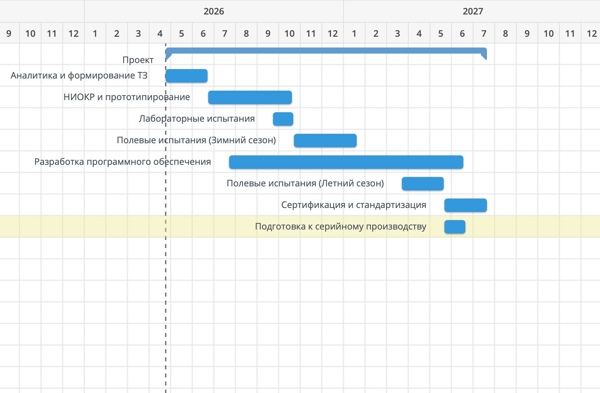

О проекте
АгроСМЗ — комплексная система непрерывного контроля физиологического состояния, поведенческих параметров и производительности крупного рогатого скота на основе биосенсоров, RFID-меток и алгоритмов машинного обучения.
Проект предназначен для оптимизации доходности молочных ферм, раннего выявления заболеваний и автоматизации управленческих процессов.
Группа: 06-331
Авторы: Черепанов Сергей, Юсупова Элеонора
Целевая аудитория
Основная аудитория: молочные фермы среднего и крупного масштаба (100–1000 коров), готовые внедрять цифровые решения.
Географический фокус: Центральный, Поволжский, Уральский федеральные округа РФ.
Демографический профиль
- Тип хозяйства: ООО, ЗАО, агрокооперативы, крупные фермерские объединения
- Размер стада: 100–500 коров (оптимально 250–350)
- Доход: среднемесячный оборот ≥ 5 млн руб.
- Образование руководства: среднее профессиональное и выше
- Технологический уровень: наличие интернета, опыт работы с современным оборудованием
- Возраст персонала: 35–55 лет руководители, 25–40 лет младший персонал
Вторичная аудитория
- Ветеринарные клиники и консультанты
- Станции по борьбе с болезнями животных (СББЖ)
- Агрохолдинги и интегрированные производственные системы
Преимущества для аудитории
- Повышение продуктивности на 10–15%
- Снижение затрат на лечение на 30–40%
- Автоматизация рутинных задач
- Соответствие требованиям цифровизации АПК
- Улучшение качества молока и здоровья животных
Инновации
Система представляет собой первый комплексный российский IoT-продукт для мониторинга здоровья КРС с адаптацией под российские климатические условия и законодательство.
Ключевые решения
- Многоуровневая биосенсорная архитектура: ушная RFID-бирка, смарт-ошейник и сенсор в доильном стакане
- Гибридная связь: LoRa + Wi-Fi + BLE
- Отечественные ML-алгоритмы для диагностики мастита, кетоза, теплового стресса
- Соответствие 152-ФЗ и локальное хранение данных на серверах РФ
Аналоги и преимущества
| Аналог | Страна | Стоимость | Преимущество нашей системы |
|---|---|---|---|
| Afimilk | Израиль | 50–70 тыс./кор. | Ниже цена, локальные сервера, русский интерфейс |
| CowManager | Германия | 60–80 тыс./кор. | Интеграция с 1С и отечественным оборудованием |
| SCR | США/Израиль | 45–65 тыс./кор. | Русская техническая поддержка |
| Moocall | Ирландия | 20–30 тыс./кор. | Ограничена обнаружением течки |
| DeLaval DelPro | Швеция | 70+ тыс./кор. | Требует монополизированной интеграции |
Наши конкурентные преимущества
- Стоимость на корову 28 150 руб.
- Поддержка русского языка и российских стандартов
- Оффлайн-режим с кэшированием
- Интеграция с 1С и отечественными доильными аппаратами
- Работа при –25°C…+45°C
Техническая реализация
Сбор данных
- Ушная бирка: температура, акселерометр, RFID UHF
- Смарт-ошейник: жвачка, активность, GPS (опция)
- Сенсор молока: электропроводность, жир, белок, объем надоя
Передача и обработка
- Локальный шлюз: LoRa, Wi-Fi, SD-буфер, AES-256
- Облачная платформа: FastAPI, PostgreSQL, TimescaleDB, MQTT
- Аналитика: преобразование данных в зоотехнические показатели
Интеллектуальная диагностика
- ML-модели для мастита, кетоза, теплового стресса
- Прогнозирование качества молока (LSTM)
- Выявление аномалий поведения (K-means, Isolation Forest)
Рекомендации и управление
- Уведомления о клиническом осмотре
- Рекомендации по кормлению и микроклимату
- Дашборд здоровья стада и отчеты
- Экспорт отчетов в Excel
Технологии
| Компонент | Технология | Обоснование |
|---|---|---|
| Протокол связи | LoRa | Низкая мощность, дальность до 3 км |
| Датчик жвачки | Акустический | Надежнее, чем вибрационный |
| Идентификация | RFID UHF | Пассивное считывание на расстоянии |
| Качество молока | Электропроводность + IR | Соответствие ГОСТ |
| Обработка сигналов | STM32 | Фильтрация шума на edge-устройстве |
Интеграция
- OPC UA для доильного оборудования
- REST API для 1С
- Интеграция с DairyComp 305 и Herd Navigator
Инвесторам
Государственное финансирование
- ФАСИЕ — грант 3–10 млн руб.
- Минсельхоз — субсидии и льготное кредитование
- Региональные программы АПК
Венчурные фонды
- RusBridge Ventures — 0,5–3 млн руб.
- Stout Capital — 2–10 млн руб.
- YF Capital — 0,1–1 млн руб.
- SberFood Tech — 2–5 млн руб.
Бизнес-ангелы
- Крупные владельцы молочных ферм — 2–5 млн руб.
- Интернет-предприниматели — 1–3 млн руб.
- Аграрные ассоциации
Альтернативное финансирование
- Льготные кредиты Сбербанка
- Программы АИЖК и ЦБ РФ
- Гранты Инноград, Первый миллион, Старт-ап в Инноград
Потенциальные инвесторы
| Инвестор | Тип | Размер | Сроки | Условия |
|---|---|---|---|---|
| ФАСИЕ | Грант | 5–8 млн руб. | 3–6 мес. | НТИОКР, российское юрлицо |
| Минсельхоз РФ | Субсидия/кредит | 2–4 млн руб. | 4–8 мес. | Внедрение в регионе |
| RusBridge Ventures | Венчур | 1–3 млн руб. | 2–4 мес. | Доказательство концепции |
| SberFood Tech | Венчур | 2–5 млн руб. | 2–4 мес. | Масштабирование |
| Фермеры | Инвестиция | 2–5 млн руб. | 1–2 мес. | Долевое участие |
| Банки | Кредит | 1–5 млн руб. | 1 мес. | Залог |
Затраты
Расчет стоимости оснащения одной коровы включает аппаратные компоненты, программное обеспечение, логистику и гарантийный фонд.
| Компонент | Описание | Стоимость, руб. |
|---|---|---|
| Умная ушная бирка | RFID UHF, датчик температуры, акселерометр, корпус IP67 | 8 000 |
| Смарт-ошейник | Датчик жвачки, датчик активности, GPS (опция), усиленный корпус | 14 000 |
| Сенсор надоя | Измерение электропроводности, жирности и белка в доильном стакане | 3 500 |
| Шлюз передачи данных | LoRa/Wi-Fi устройство с буферизацией | 150 |
| Программное обеспечение | Лицензия на мобильное приложение и облачную платформу | 1 000 |
| Логистика и гарантийный фонд | Доставка, первоначальная настройка, резерв на гарантийное обслуживание | 1 500 |
| Итого на 1 корову | 28 150 |
Капитальные инвестиции на ферму 100 коров составляют: 2 815 000 руб.
Годовые операционные расходы (OPEX)
- Облачная инфраструктура и обновления ПО: 500 руб./кор./год → 50 000 руб.
- Резерв на ремонт и частичную замену компонентов (≈10% оборудования): 28 150 руб.
- Техническая поддержка и консультации: 20 000 руб.
Итого годовые OPEX для 100 коров: 98 150 руб.
Эти расходы включают обслуживание платформы, поддержку пользователей, обновления и замену расходных материалов.
Окупаемость
Расчет основан на ферме 100 коров, среднем годовом удое 8 000 л на корову и цене молока 90 руб./л.
Потенциальная годовая выручка без потерь: 72 000 000 руб.
Структура потерь без системы
- Снижение удоя из-за скрытых заболеваний (10%): 2 500 000 руб.
- Потеря класса молока при повышенной соматике: 720 000 руб.
- Затраты на ветеринарное лечение и выбраковку: 375 000 руб.
Общие ежегодные потери без системы: 3 595 000 руб.
Экономическая выгода с системой
- Восстановление удоя за счет ранней диагностики: 1 750 000 руб.
- Сохранение высшего сорта молока: 576 000 руб.
- Экономия на лечении: 150 000 руб.
Итого годовая экономия: 2 476 000 руб.
Чистый денежный поток после оплаты годовых OPEX: 2 377 850 руб.
Срок окупаемости капитальных затрат (CAPEX): ≈ 1,18 года (около 14,2 месяцев).
Это означает, что проект окупается чуть более чем за год при консервативных оценках эффективности.
Календарный план
Реализация проекта рассчитана на 15 месяцев с поэтапными испытаниями, разработкой и подготовкой к производству.
| Этап | Срок | Задача | Результат |
|---|---|---|---|
| Аналитика и ТЗ | Месяцы 1-2 | Сбор требований, патентный поиск, спецификация | ТЗ и BOM |
| НИОКР и прототипирование | Месяцы 3-5 | Разработка плат, корпуса, сборка прототипов | Альфа-прототипы |
| Лабораторные испытания | Месяц 6 | IP67, ударопрочность, калибровка | Отчет о испытаниях |
| Полевые испытания (зима) | Месяцы 7-9 | Тестирование на 20 коров | Данные о зимней работе |
| Разработка ПО | Месяцы 4-10 | Backend, мобильное приложение, ML | Бета-платформа |
| Полевые испытания (лето) | Месяцы 11-12 | Тестирование на 50 коров | Финальная калибровка |
| Сертификация | Месяцы 13-14 | ФСБ/ФСТЭК, Россельхознадзор, ЕАС | Пакет разрешений |
| Подготовка производства | Месяц 15 | Пресс-формы, завод, упаковка | Готовность к выпуску |
Диаграмма Ганта
На диаграмме отображены основные этапы проекта и сроки их реализации.

SWOT-анализ
| Сильные стороны | Слабые стороны |
|---|---|
| Комплексный мониторинг физиологии и поведения. Высокая точность прогнозов. Окупаемость < 1.5 года. Адаптация под российские условия. Интеграция с ERP. | Высокие начальные затраты для малых ферм. Необходимость обучения персонала. Зависимость от интернета. Риск механических повреждений. |
| Возможности | Угрозы |
|---|---|
| Государственные субсидии и гранты. Экспорт в СНГ. Партнёрство с агрохолдингами. Интеграция в IoT-экосистемы. | Конкуренция зарубежных брендов. Изменения законодательства. Рост цен на компоненты. Консерватизм фермеров. |
Безопасность и устойчивость
Безопасность
- Материалы: гипоаллергенные, медицинский силикон, ABS, AISI 304
- Корпуса IP67, защита аккумуляторов
- Шифрование TLS 1.3 и AES-256
- Двухфакторная аутентификация и разграничение ролей
- Серверы в РФ, соответствие 152-ФЗ
Устойчивость
- Перерабатываемые материалы и картонная упаковка
- Программа take-back для утилизации батарей
- Локализация производства и снижение логистических выбросов
- Энергоэффективные устройства с автономностью до 2 лет
- Социальный эффект: снижение антибиотиков и рост продовольственной безопасности
Программное обеспечение
Мобильное приложение
- Контроль состояния стада и уведомления
- Карточки коров, пороговые значения, рекомендации
- Экспорт в Excel и интеграция с 1С
Серверная часть
- MQTT и REST API
- PostgreSQL + TimescaleDB
- Триггеры для автоматических событий
ML Engine
- Random Forest, XGBoost для классификации
- LSTM для прогноза качества молока
- K-means и Isolation Forest для аномалий
Админ-панель и интеграции
- Настройка пользователей и тревог
- Интеграция с OPC UA, DairyComp, Herd Navigator
- CI/CD: Docker, Kubernetes, GitHub Actions
Контакты
Хотите внедрить АгроСМЗ на своей ферме? Напишите нам для пилотного проекта и консультации.
info@agroiotsolutions.com